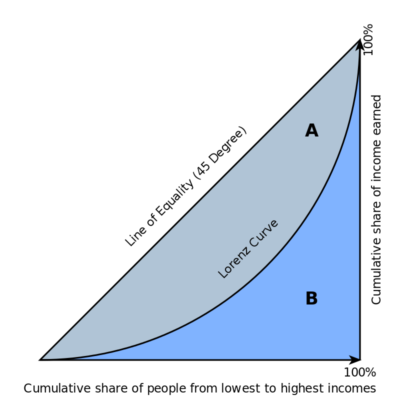

3 Analiza parametryczna
3.1 Miary położenia
Miary przeciętne charakteryzują średni lub typowy poziom wartości cechy. Są to więc takie wartości, wokół których skupiają się wszystkie pozostałe wartości analizowanej cechy.

Na rysunku po lewej mamy dwa rozkłady różniące się poziomem przeciętnym (czerwony ma przeciętnie mniejsze wartości niż turkusowy). Są to rozkłady jednomodalne, tj. wartości skupiają się wokół jednej wartości. Dla takich rozkładów ma sens obliczanie średnich.
Na rysunku po prawej mamy rozkłady nietypowe: wielomodalne (turkusowy) lub niesymetryczne (wartości skupiają się nie centralnie ale po prawej/lewej od środka przedziału zmienności).
W świecie rzeczywistym zdecydowana większość rozkładów jest jednomodalna.
Klasyczne (średnia arytmetyczna) i pozycyjne (mediana, dominanta, kwartyle, kwantyle, decyle).
Średnia artmetyczna (Mean, Arithmetic mean). Oblicznie średniej dla szeregu prostego (suma wartości podzielona przez liczbę składników sumy): \[ \bar x = \frac{\sum_{i=1}^N x_i} {N} \]
Mediana (Median, kwartyl drugi) dzieli zbiorowość na dwie równe części; połowa jednostek ma wartości cechy mniejsze lub równe medianie, a połowa wartości cechy równe lub większe od Me. Stąd też mediana bywa nazywana wartością środkową.
Właśności mediany – odporna na wartości nietypowe (w przeciwieństwie do średniej)
Przykład: współczynnik dzietności na świecie w roku 2018
Średnia wartość współczynnika 2.6778607; mediana – 2.2. Interpretacja średniej: wartość współczynnika dzietności wyniosła 2.6778607 dziecka. Uwaga: średnia dzietność na świecie nie wynosi 2.6778607 (bo kraje różnią się liczbą ludności). Interpretacja mediany: dzietność kobiet w połowie krajów na świecie wynosiło 2.2 i mniej. Uwaga: dzietność połowy kobiet na świecie wyniosła 2.2 i mniej jest niepoprawną interpretacją (różne wielkości krajów.)
Generalna uwaga: interpretacja średniej-średnich często jest nieoczywista i należy uważać. (a współczynnik dzietości jest średnią: średnia liczba dzieci urodzonych przez kobietę w wieku rozrodczym. Jeżeli liczymy średnią dla 202 krajów, to mamy średnią-średnich). Inny przykład: odsetek ludności w wieku poprodukcyjnym wg powiatów (średnia z czegoś takiego nie da nam odsetka ludności w wieku poprodukcyjnym w Polsce, bo powiaty różnią się liczbą ludności.)
Dominanta (Mode, Moda, wartość modalna, wartość najczęstsza) jest to wartość cechy statystycznej, która w szeregu empirycznym występuje najczęściej. W szeregach prostych i rozdzielczych jest to wartość cechy, której odpowiada największa liczebność (częstość).
Kwartyle (Q, quartile, \(Q_1\), \(Q_3\)) – wartości cechy dla jednostek dzielących populację na cztery równe części. Kwartyl pierwszy dzieli populację w proporcji 25/75%, kwartyl drugi w proporcji 50/50%, a kwartyl trzeci w proporcji 75/25%. kwantyle (D, wartości dziesiętne), podobnie jak kwartyle, tyle że dzielą na 10 części. Centyle (P, wartości setne), podobnie jak kwantyle tyle że dzielą na 100 części. Przykładowo wartość 99 centyla i mniejszą ma 99% jednostek w populacji.
3.2 Miary zmienności
Wariancja, odchylenie standardowe, odchylenie przeciętne, współczynnik zmienności (Pearsona)
Wariancja (variance) jest to średnia arytmetyczna kwadratów odchyleń poszczególnych wartości cechy od średniej arytmetycznej zbiorowości.
Oblicznie wariancji dla szeregu prostego:
\[ S^2 = \frac{1}{N} \sum_{i=1}^N (x_i - \bar x)^2 \]
często zamiast dzielenie przez \(N\) dzielimy przez \(N-1\).
Odchylenie standardowe (standard deviation, sd) jest pierwiastkiem kwadratowym z wariancji. Parametr ten określa przeciętne zróżnicowanie poszczególnych wartości cechy od średniej arytmetycznej.
Współczynniki pozycyjne. Odchylenie ćwiartkowe (Q, midhinge): \[ Q = \frac{Q_3 - Q_1}{2} \] i rozstęp ćwiartkowy (interquartile range, IQR): \[ R_Q = Q_3 - Q_1 \]
Współczynnik zmienności jest ilorazem bezwzględnej miary zmienności cechy i średniej wartości tej cechy. W analizie struktury korzysta się z różnych miar położenia i zmienności, dlatego są współczynniki zmienności klasyczne i pozycyjne.
Współczynniki klasyczne:
\[ V_s = \frac{s}{\bar x}\qquad \textrm{lub}\qquad V_d = \frac{d}{\bar x} \] pozycyjne \[ V_Q = \frac{Q_3 - Q_1}{\textrm{Me}} \] albo (Quartile coefficient of dispersion): \[ V_Q = \frac{Q_3 - Q_1}{Q_3 + Q_1} \]
Współczynnik zmienności jest wartością niemianowaną. Wartości liczbowe współczynników zmienności najczęściej są podawane w procentach. Przyjmuje się, że jeżeli współczynnik zmienności jest poniżej 10%, to cechy wykazują zróżnicowanie statystycznie nieistotne. Duże wartości tego współczynnika świadczą o dużym zróżnicowaniu, a więc niejednorodności zbiorowości.
Współczynnik zmienności stosuje się zwykle w porównaniach, gdy chce się ocenić zróżnicowanie: kilku zbiorowości pod względem tej samej cechy, tej samej zbiorowości pod względem kilku różnych cech.
UWAGA: ten współczynnik może dawać dziwne rezulataty jeżeli średnia wynosi zero (niezdefiniowany), jest ujemna lub jest bliska zera; zwłaszcza jeżeli użyjemy skali przedziałowej. Przykład:
Średnie temperatury miesięczne. Sopot, Polska
mc 2010 2011 2012 2013 2014 2015 2016 2017 2018 2019 Tm Sm Vm
01 -5.36 -0.41 -0.37 -1.77 -2.27 1.53 -2.39 -1.16 0.62 -0.31 -0.74 2.23 -299.54
02 -1.08 -3.19 -3.31 -0.13 2.55 1.44 2.72 -0.08 -2.56 3.27 -0.04 2.36 -6658.52
03 3.65 2.83 5.04 -0.87 6.09 4.91 4.09 5.04 -0.07 5.26 3.60 2.21 61.57
04 7.47 9.47 7.59 6.55 9.37 7.94 8.30 6.70 10.43 8.62 8.25 1.19 14.37
05 10.85 12.78 13.11 14.10 12.82 12.01 14.37 12.77 15.40 11.56 12.98 1.29 9.95
06 16.06 17.65 14.91 17.15 15.37 15.36 17.62 16.18 17.51 20.03 16.78 1.45 8.65
07 20.49 18.11 18.07 18.53 20.51 17.52 18.51 16.84 20.20 17.17 18.59 1.29 6.94
08 18.71 17.58 17.66 18.11 17.70 19.47 17.36 17.53 19.46 18.65 18.22 0.76 4.15
09 13.03 14.79 13.91 12.38 14.41 14.16 15.53 13.47 15.04 13.69 14.04 0.90 6.44
10 6.24 9.27 8.23 9.93 8.78 7.78 7.76 10.05 10.17 9.70 8.79 1.21 13.81
11 4.54 4.54 5.03 5.50 4.89 6.01 3.51 4.76 4.88 5.27 4.89 0.63 12.83
12 -5.03 3.00 -1.70 3.40 1.02 4.56 2.67 2.18 2.05 3.54 1.57 2.73 174.09
Tm -- średnia dla lat 2010-2019
Sm -- odchylenie standardowe dla lat 2010--2019
Vm -- współczynnik zmienności tj Vm = Sm / Tm * 100Dla lutego współczynnik zmienności przymuje absurdalną wartość 6 tysięcy (procent). Do tego na minus.
3.3 Miary asymetrii
Asymetria (skewness), to odwrotność symetrii. Szereg jest symetryczny jeżeli jednostki są rozłożone ,,równomiernie’’ wokół wartości średniej: \[ \bar x = \textrm{Me} = D \] Asymetria prawostronna, lewostronna; wskaźnik asymetrii (skośności), współczynniki asymetrii (skośności).
Moment trzeci centralny – średnia arytmetyczna z podniesionych do potęgi trzeciej odchyleń wartości cechy od średniej arytmetycznej \[ \mu_3 = \frac{1}{N} \sum_{i=1}^N (x_i - \bar x)^3 \] jeżeli \(\mu_3 = 0\) szereg symetryczny, \(\mu_3 > 0\) asymetria dodatnia (prawostronna), \(\mu_3 < 0\) asymetria ujemna (lewostronna)
Moment trzeci względny określa siłę i kierunek asymetrii: \[ g_1 = \frac{\mu_3}{s^3} \] Na podstawie badań empirycznych: \(-2 < g_1 < 2\), w skrajnych przypadkach może przekraczać ten przedział.
Współczynnik asymetrii (skośności) oparty na odległościach między średnimi (K. Pearson). \[ W_s = \frac{\bar x - D}{s} \] rzadziej używa się: \[ W_s = \frac{\bar x - \textrm{Me}}{s} \] Współczynnik asymetrii (skośności) oparty na odległościach między kwartylami lub decylami: \[ W_{sq} = \frac{(Q_3 - Q_2) - (Q_2 - Q_1)}{Q_3 - Q_1} \]
3.4 Miary koncentracji
Koncentracja – nierównomierny podział wartości cechy w zbiorowości.
Współczynnik Giniego i Krzywa Lorenza
Krzywa Lorenza jest funkcją określoną na zbiorze liczb dodatnich L(Cn), gdzie Cn jest kumulowaną liczebnością zaś L kumulowaną wartość cechy. Zwykle wartości kumulowane są przedstawione w procentach co pozwala na zgrabną interpretację w stylu: 20% jednostek ma 5% łącznej wartości cechy albo 50% rolników posiada 15% łacznych areałów, itp.

przekątna łącząca lewy-dolny, prawy-górny wierzchołek jest nazywana linią równomiernego rozkładu (koncentracji równomiernej, line of equality). Współczynnik Giniego to iloraz pola A do sumy pół A+B.
Im większa koncentracji, tym krzywa Lorenza jest bardziej wygięta, a wartość współczynnika Ginego większa (maksymalną wartością jest 1)
Współczynnik HH
Innym współczynnikiem koncentracji jest współczynnik Herfindahla-Hirschmana (HH-Index, https://en.wikipedia.org/wiki/Herfindahl%E2%80%93Hirschman_Index):
\[HH = \sum_{i=1}^N x_i^2, \quad\mathrm{gdzie}: \sum_{i=1}^N x_i =100%\] Maksymalną wartością tego współczynnika jest 10000, wartości większe od 1800 świadczą o znacznej koncentracji.